Por dentro do Visi, existe muito mais.
A obra capturada em milhões de pontos, com medidas reais do que foi executado.
media/01-nuvem-de-pontos.mp4O projeto sobre a realidade capturada, para enxergar cada divergência.
media/02-sobreposicao-de-projetos.mp4Volumes calculados direto da captura, sem depender de estimativa.
media/03-volumetria.mp4A obra vista do alto, em 360°, a partir de qualquer ponto do voo.
media/04-angulo-drone-360.mp4Um vídeo gravado no canteiro vira um registro navegável da obra.
media/05-captura-por-video.mp4A evidência conecta o que foi planejado ao que está sendo construído, e dá segurança à decisão.